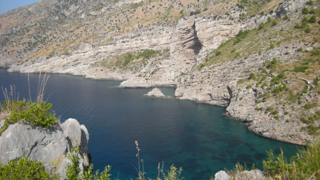

Un'area naturale protetta della Campania istituita nel 1997. Occupa una superficie di 49,50 ha nella provincia di Napoli. E' gestita dal Fondo per l'Ambiente Italiano (FAI).
- Plutonomy
- An economy that is significantly influenced by the very wealthy. A buzz word initially coined by analysts at Citigroup in 2005 to describe the incredible growth of the U.S. economy during that period despite increasing interest rates, commodity prices and an inflated national debt. Citigroup analysts argued that as such an economy continues to grow in the face of contradictory elements, the more important the society's ultra rich become to maintaining such ...
After the first day of a world brewing convention in the states, the CEO's of various brewing organisations retire to the bar.
Bruce, the CEO of Fosters, shouts to the barman: "In 'Straiyla, we make the best beer in the world, so pour me a Fosters mate."
Bob, CEO of Budweiser calls out next: "In the States we brew the finest beer known to mankind and i make the king of them all. Gimme ...
SOKKOMB is a new low-cost product designed specifically for all those citizens who are interested in Do-It-Yourself justice.